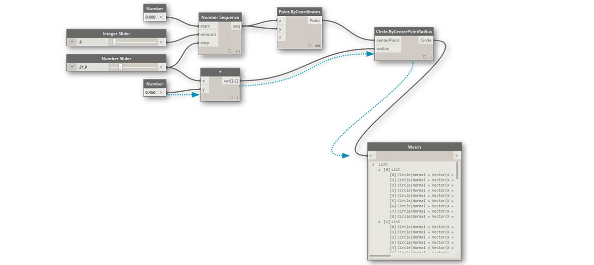
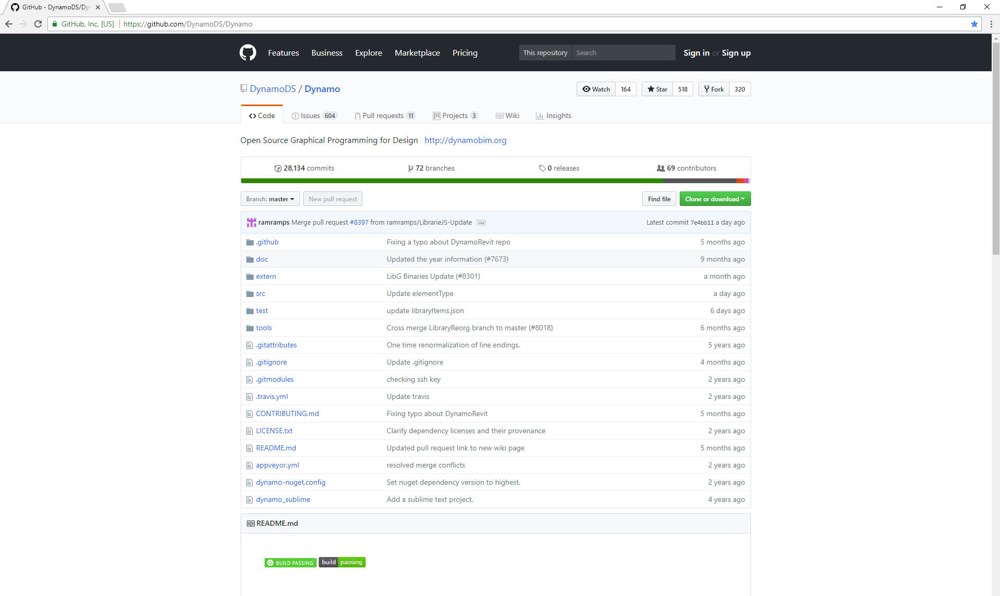
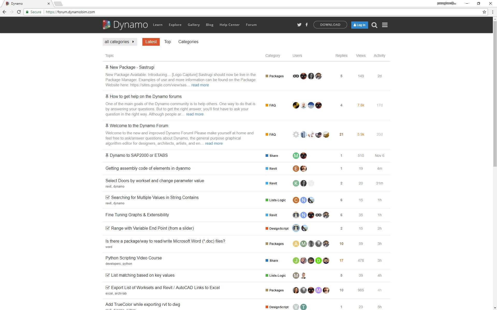
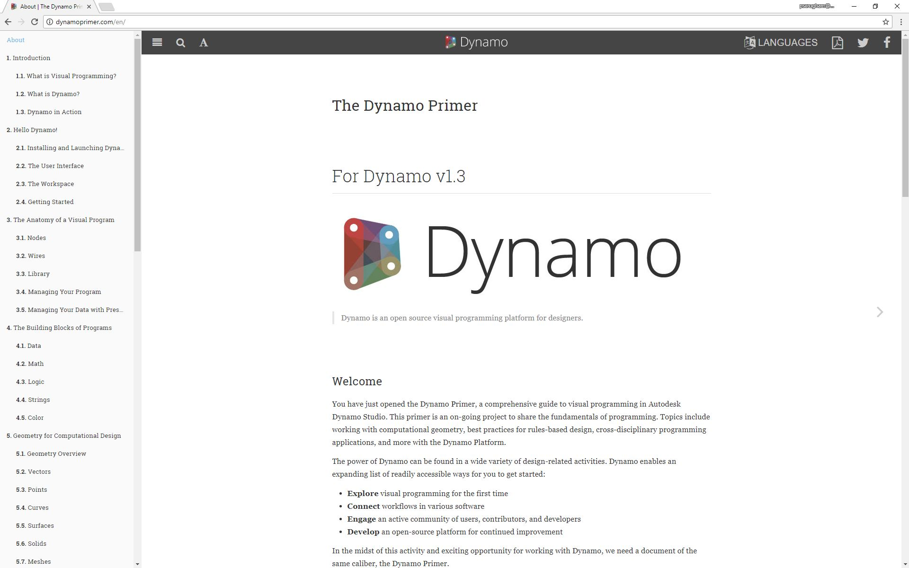

Introduction
Dynamo is a visual programming platform that enables designers to define the relationships and the sequences of actions that compose custom algorithms. Dynamo is an open-source project on Github, giving everyone an opportunity to contribute to its development.

A visual program in Dynamo
What is the purpose of this guide?
The purpose of this guide is to help you navigate the range of C# development possibilities for Dynamo from how to create zero-touch nodes to building extensions.

The Dynamo source on Github
The Community
The strength of Dynamo as an ever-growing platform is a product of the incredible community of users contributing to its development. Become an active part of this conversation by following the Blog, providing original content to the Gallery, or engaging others in the Forum.

The Dynamo Forum
Looking for an introduction to Dynamo?
If you are looking for a guide to visual programming in Dynamo, please visit the Dynamo Primer. This invaluable resource covers the foundational concepts of visual programming in Dynamo and development options in the Dynamo workspace such as DesignScript, Python, and Zero-Touch.

The Dynamo Primer
What additional online resources do we provide?
Dynamo: Download the latest stable and daily builds of Dynamo
http://dynamobim.com/download/
Dynamo GitHub: Dynamo is an open-source development project on Github.
https://github.com/DynamoDS/Dynamo
Dynamo Github Wiki: This has been the primary resource for developer documentation.
https://github.com/DynamoDS/Dynamo/wiki
Node Naming Standards provides standards and guidelines for naming categories, nodes, and input and output ports in Dynamo.
https://github.com/DynamoDS/Dynamo/wiki/Naming-Standards
Dynamo Language/API guide: Dynamo's API documentation currently covers the core functionality
http://dynamods.github.io/DynamoAPI/
DynamoBIM The best source for additional information, learning content, and forums is the DynamoBIM website.
Dynamo Dictionary A searchable database of all Dynamo nodes
http://dictionary.dynamobim.com/
DesignScript Language Guide A PDF guide to writing DesignScript
How can I suggest changes to this guide?
This documentation is open to suggestions. These can be made directly in Gitbook by creating change requests.